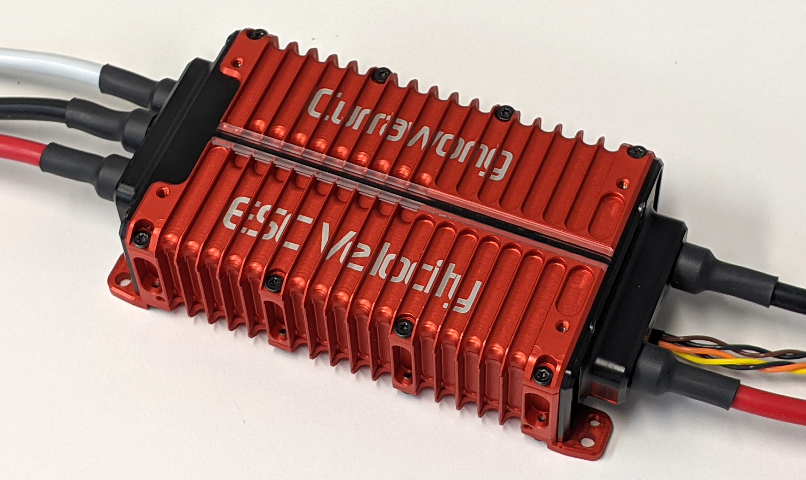
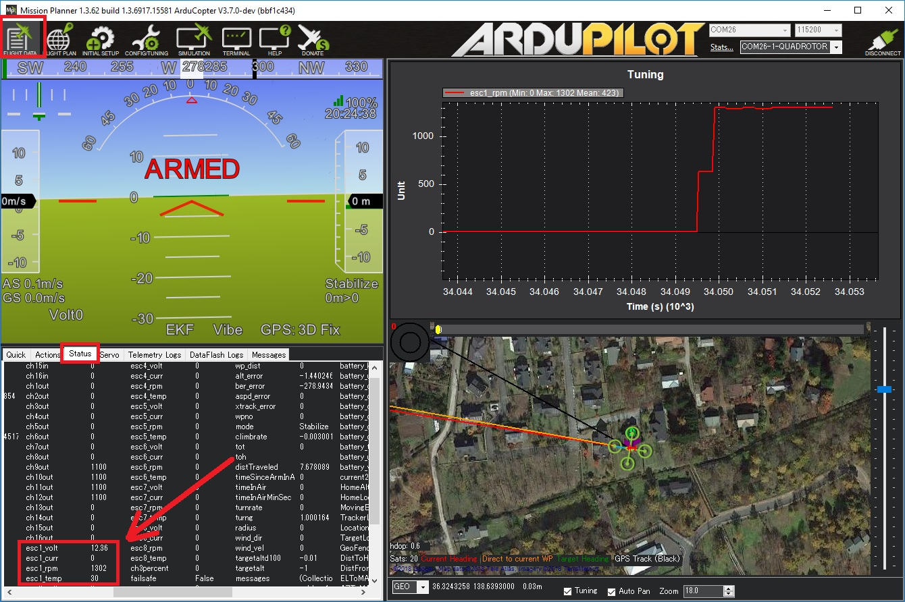

Currawong Velocity CAN ESCs¶
Currawong’s Velocity range of ESCs provide motor control for the aerospace sector, with a high degree of reliability.
Designed for driving extremely large motors for heavy-lift applications, the Velocity range of ESCs is available in power levels above 20kW
Up to 18S (75V) battery packs
Sustained currents above 300A
Compact design
Fully isolated communication interface
Designed and manufactured in Australia
The Velocity ESC provides a CAN communication interface for commands and telemetry. A traditional digital PWM interface is also supported. They support both PiccoloCAN and DroneCAN protocols.
Additionally, the Velocity ESC provides an optional hardware interlock for increased operator safety.
Where to Buy¶
Contact Currawong Engineering for purchasing details.
PiccoloCAN Setup¶
Note
The Velocity ESC uses the PiccoloCAN protocol. Originally developed for the Piccolo autopilot, the protocol is now natively supported by ArduPilot
ArduPilot Configuration¶
To enable communication with the Velocity ESCs using PiccoloCAN, the following parameters must be set.
Set CAN_D1_PROTOCOL = 4 (PiccoloCAN)
Set CAN_P1_DRIVER = 1 (First driver) to specify that the ESCs are connected to the CAN1 port
[site wiki=”copter,rover”]
- Set MOT_PWM_MIN = 1000 and MOT_PWM_MAX = 2000 so ArduPilot uses an output range that matches the ESCs input range
[/site]
[site wiki=”copter”]
- Set MOT_SPIN_ARM = 0.03 meaning the motors will spin at 3% of full thrust when armed
- Set MOT_SPIN_MIN = 0.05 meaning the motors will spin at no less than 5% of full thrust when flying
[/site]
[site wiki=”plane”]
- Set SERVOx_MIN = 1000 and SERVOx_MAX = 2000 for each ESC connected (x corresponds to the ESC number) so ArduPilot uses an output range that matches the ESCs input range
[/site]
- Set SERVOx_FUNCTION to each motor channel (e.g. 33 - 40 for motors 1 - 8). This is automatically configured when setting frame class/type. If a motor channel isn’t assigned to a servo output, commands won’t be sent to the associated ESC.
By default, all configured motor channels are used to send control commands to Velocity ESCs. These control messages are transmitted by the autopilot at a default rate of 50Hz. These parameters can be modified using:
The CAN_D1_PC_ESC_BM parameter is a bitmask that determines which ESC (motor) channels are transmitted over CAN
The CAN_D1_PC_ESC_RT parameter determines the rate (Hz) at which commands are sent out to the connected Velocity ESCs
ESC Configuration¶
The following configuration settings should be used on the Velocity ESC for operation with Ardupilot:
Set Piccolo Node ID to the motor channel the ESC should listen to. Note this may not be the same as the configured servo output number.
Enable
Listen for Broadcast Commands.
DroneCAN Setup¶
ArduPilot Configuration¶
Refer to DroneCAN ESCs Autopilot Setup.
ESC Configuration¶
To configure the ESC to receive commands from
SERVOxoutput, setdronecan.escIndextox - 1(e.g. forSERVO5, setescIndex= 4). Note that this is different to PiccoloCAN, where motor channels are assigned to node ids, rather than servo output channels to theescIndex.Telemetry periods can be configured with the
dronecan.messagePeriodssettings.By default, the ESC respects arming messages from the Autopilot. To always software enable the ESC when a command is received, and ignore arming messages, set
config.swInhibit= 1 (False).
By default, the Velocity ESC is configured to use Dynamic Node id Allocation (DNA). dronecan.nodeId should be set to “0” (to use DNA), unless all devices on the CAN bus are configured to use static IDs.
Only the DroneCAN specific settings are shown when fetching settings using the DroneCAN protocol. The full suite of Velocity ESC settings can be configured by enabling the show_advanced setting.
Note
It is recommended to configure your motor, and perform ESC and motor validation using PiccoloCAN with CEquip, and swap to DroneCAN, if required, during vehicle integration.
Logging and Reporting¶
Velocity ESCs provide comprehensive telemetry information back to the autopilot which is recorded in the autopilot’s onboard log, and can be viewed in any ArduPilot compatible log viewer. This information includes:
RPM
Voltage
ESC Temperature
Motor current
Motor Temperature (when used with an external sensor)
This information (except the motor temperature) can also be viewed in real-time using a ground station. If using the Mission Planner go to the Flight Data screen’s status tab and look for (e.g.) esc1_rpm.
{kind=link}
Note
Sending ESC data to the GCS requires using MAVLink2. Please check the appropriate SERIALx_PROTOCOL parameter is 2 (where “x” is the serial port number used for the telemetry connection).